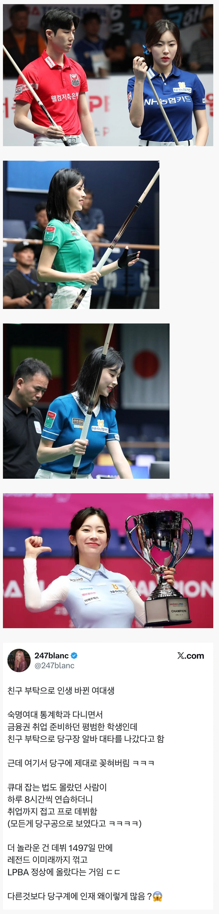

99년생 정수빈 선수
(인스타 : lalra_.bin)

99년생 정수빈 선수
(인스타 : lalra_.bin)
수빈 두산의 정수빈~
이윾시 증슈빈
난 당구 존나 어렵던데 회전 이론으로는 일고 있어도 피지컬이 안됨
나도 뭐 밑치고 중앙치고 위치고 측면치고로 어떻게 도는진 이론은 알겠는데
원하는 방향 원하는 힘으로 직선으로 치는 거부터 안됨ㅋㅋㅋ
1497일이면 4년 넘지않냐
생긴게 예쁘게 생겨서 인플루언서 하면 되겠네
당구장 알바는 일단 와꾸가 좀 먹혀야 하는지라..
일단 앉혀 놓으면 빗자루질도 맛쎄이로 찍는 당구에 미친 늙크크들이
어떻게든 한번 빵뎅이 터치해볼라고 당구 가르쳐줌
"아아니 이렇게 자세를 잡고 쳐야지" 하면서 허리 슥 만지고
"내가 각 봐줄게잉" 하면서 맞은편 가서 가슴골 슥 쳐다보고
여튼 그러다보니 실력이 안늘수가 없음
역겹지만 사실임
고우시다
재능을 낭비하고 있네